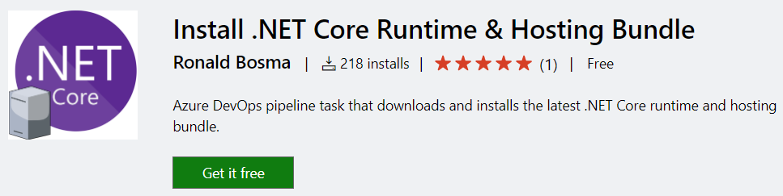
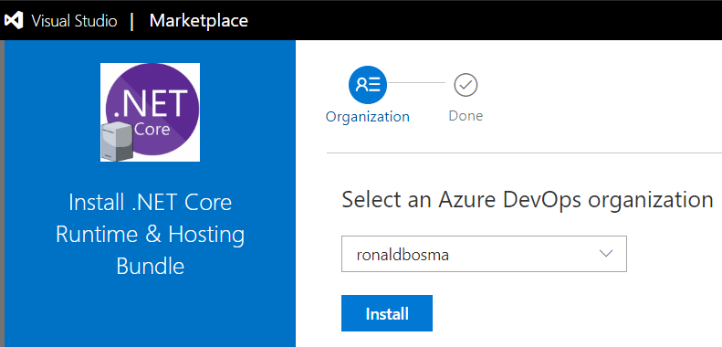
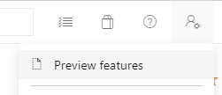
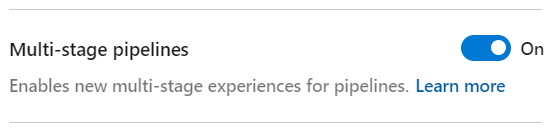
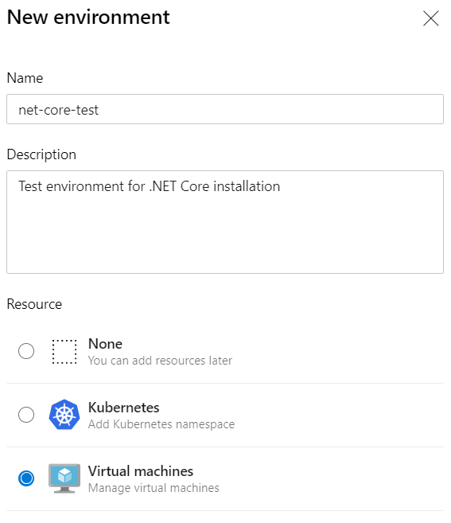
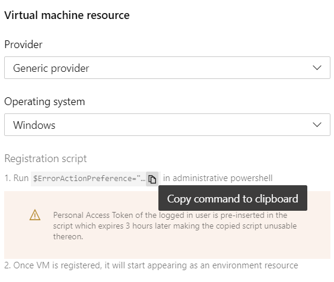
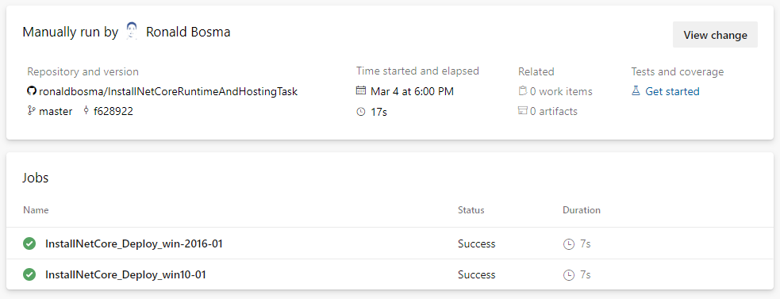

How to install .NET Core on a Windows server

At my current client we’re transitioning from .NET Framework to .NET Core. We only have a few .NET Core web applications at the moment and the preferred hosting model is to host these in IIS. This means we need to install the .NET Core Runtime & Hosting Bundle on every Windows server where a .NET Core web application is deployed. This bundle includes the .NET Core Runtime and IIS support for .NET Core.
Where new versions and patches of the .NET Framework are installed through Windows Update, .NET Core does not provide a similar solution. Which means that for every .NET Core update we manually need to download the installer and execute it on every server in every environment. To make this process simpler and faster I’ve created an Azure DevOps extension called Install .NET Core Runtime & Hosting Bundle that automates this task. You can find the extension in the Visual Studio Marketplace.
UPDATE: starting in December 2020 .NET Core has been added to Microsoft Update. Before you proceed and use my custom extension, have a look at .NET Core coming to Microsoft Update.
In the rest of this post I’ll give an example of how you can use the custom task in Azure DevOps with a YAML pipeline to automate the installation of the .NET Core Runtime & Hosting Bundle on a Windows server.
NOTE: if you have an older version of Azure DevOps that doesn’t support YAML pipelines in combination with environments, you can create a deployment group instead of an environment. In that case you can use a release pipeline instead of a YAML pipeline to execute the ‘Install .NET Core Runtime & Hosting’ task.
Install the ‘Install .NET Core Runtime & Hosting Bundle’ extension
Step 1 is to install the extension in your Azure DevOps organization. For this, go to the Visual Studio Marketplace and click on the ‘Get it free’ button.

You’ll need to log into Azure DevOps if you haven’t already. Next, select the correct organization and click Install. After installation, proceed to your Azure DevOps organization.
NOTE: depending on your permissions, an administrator might have to approve the installation before you can proceed.

Enable Multi-stage pipelines preview feature
To use a YAML pipeline that can deploy to an environment, you’ll need to enable the ‘Multi-stage pipelines’ preview feature.
Open the ‘User settings’ menu in the top right corner and choose ‘Preview features’.

Enable the ‘Multi-stage pipelines’ preview feature.

Create an Environment
We need an environment before we can install the .NET Core Runtime & Hosting Bundle with a YAML pipeline. This will enable us to add several virtual machines to an environment and install the .NET Core Runtime & Hosting Bundle on all of them at once.
So, go to Pipelines > Environments and choose ‘New environment’. Enter a Name and Description, select ‘Virtual machines’ as the resource and choose Next.

You’ll get a screen where you can configure the virtual machine resource. Copy the registration script command to the clipboard using the copy button.

Go to the machine on which you want to install the .NET Core Runtime & Hosting Bundle, for example using Remote Desktop. Add the machine to the environment using the registration script you’ve just copied. See Environment - virtual machine resource for more information.
The YAML pipeline
Now that we have an environment, we can create the YAML pipeline using the following steps (see create your first pipeline for a more detailed description):
- In the menu of Azure DevOps choose Pipelines > Pipelines.
- Click the ‘New pipeline’ button.
- Select the source where you want to store your YAML pipeline.
- Select the repository where you want to store your YAML pipeline.
- Select the pipeline template you want to start from. In our case the ‘Starter pipeline’ will do.
- An editor is opened where you can configure your pipeline using YAML. Replace all content with the following:
trigger: none
stages:
- stage: 'InstallNetCore'
jobs:
- deployment: 'InstallNetCore'
environment:
name: 'net-core-test'
resourceType: 'VirtualMachine'
tags: 'net-core'
strategy:
runOnce:
deploy:
steps:
- task: InstallNetCoreRuntimeAndHosting@1
inputs:
version: '3.1'
useProxy: false
norestart: false
iisReset: true
The pipeline above will install the .NET Core 3.1 Runtime & Hosting Bundle on every machine with the tag ‘net-core’ in the environment ‘net-core-test’. (See the description in the Visual Studio Marketplace for more details about the inputs that you can provide to the task.)
Choose ‘Save and run’ to save the pipeline in your repository and execute the pipeline. After the pipeline has finished, the result should look like the image below were the .NET Core Runtime & Hosting Bundle has been installed on the servers ‘win-2016-01’ and ‘win-10’.

That’s everything you need to do to update the .NET Core Runtime & Hosting Bundle on a Windows server using Azure DevOps.